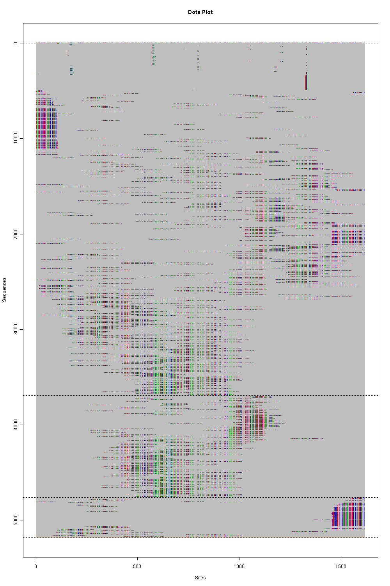
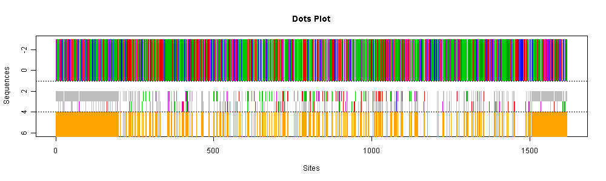

This is an application to the Next Generation Sequencing which produces large amount of short-read fragments. Also, this shows the capability of Phyloclustering to deal with large data. The data are available from the paper (contact author to obtain files)
Here, we focus on the patient "V11909". The detail steps of this phyloclustering reanalysis are the following:
phyclust to analyze the commonly aligned fragments containing
large number of gaps, and
phyclust have the size of
5177 fragments and each has 1617 bps after resembling the data.
We conservatively pick
,
as the results and display in the figures
(click to enlarge.)
The colored dots represent four different nucleotides and
the gray areas are all gaps.
In the first figure,
we may say that
the first cluster is the major population
in this patient. Further, it possibly exists other two small populations.
In the second figure,
the three central sequences for each cluster are summarized
where we compare the second and third central sequences against the first
central sequence (top bar) and plot the mutation sites which are denoted
by the origin dots in the bottom.

